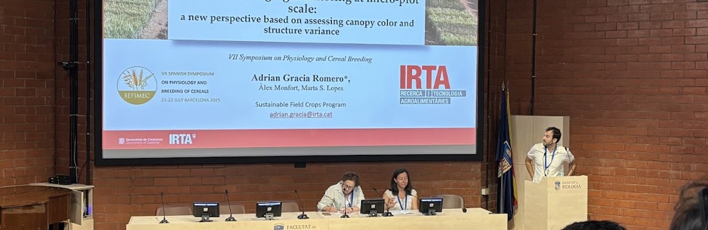

Publications & Dissemination

Selected Publications
-
Gracia-Romero, A. et al. 2025. How Low-Cost UAVs Could Revolutionize Field Research as a Substitute for Traditional Agronomic Measurements in Crop Phenotyping? Chapter in Empowering Wheat Cultivation with GIS, Digital Approaches and Artificial Intelligence. Springer Nature Switzerland.
doi.org/10.1007/978-3-031-99954-3_9
-
Gracia-Romero, A. et al. 2024. Heading and maturity date prediction using vegetation indices: a case study using bread wheat, barley and oat crops. European Journal of Agronomy. (IF: 3.949).
doi.org/10.1016/j.eja.2024.127330
-
Araus, J.L., Gracia-Romero, A. et al. 2021. Crop phenotyping in a context of Global Change: what to measure and how to do it. Journal of Integrative Plant Biology. (IF: 7.061).
doi.org/10.1111/jipb.13191
Peer-Reviewed Publications
-
Gracia-Romero, A. et al. 2025. How Low-Cost UAVs Could Revolutionize Field Research as a Substitute for Traditional Agronomic Measurements in Crop Phenotyping? Chapter in Empowering Wheat Cultivation with GIS, Digital Approaches and Artificial Intelligence. Editor: Springer Nature Switzerland.
doi.org/10.1007/978-3-031-99954-3_9
-
Gracia-Romero, A. et al. 2025. Leaning on Smart Agricultural Systems for Crop Monitoring. Agriculture. (IF: 3.400).
doi.org/10.3390/agriculture15141542
-
Gracia-Romero, A. et al. 2025. In-Field Phenotyping Using the Low-Cost and Open Access Fluorescence PhotosynQ MultispeQ Sensor Together with NDVI: A Case Study with Durum Wheat. Agriculture.
doi.org/10.3390/agriculture15040385
-
Jauregui-Beso, J., Gracia-Romero, A. et al. 2025. Winter wheat plant density determination: Robust predictions across varied agronomic conditions using multiscale RGB imaging. Smart Agricultural Technology.
doi.org/10.1016/j.atech.2025.100921
-
Gracia-Romero, A. et al. 2024. Heading and maturity date prediction using vegetation indices: a case study using bread wheat, barley and oat crops. European Journal of Agronomy. (IF: 3.949).
doi.org/10.1016/j.eja.2024.127330
-
Segarra, J., Gracia-Romero, A. et al. 2023. Multiscale assessment of ground, aerial and satellite spectral data for monitoring wheat grain nitrogen content. Information Processing in Agriculture. (IF: 7.423).
doi.org/10.1016/j.inpa.2022.05.004
-
Gracia-Romero, A. et al. 2023. Improving in-season wheat yield prediction using remote sensing and additional agronomic traits as predictors. Frontiers in Plant Science. (IF: 5.600).
doi.org/10.3389/fpls.2023.1063983
-
Vurro, F., Gracia-Romero, A. et al. 2023. Field Plant Monitoring from Macro to Micro Scale: Feasibility and Validation of Combined Field Monitoring Approaches from Remote to in Vivo to Cope with Drought Stress in Tomato. Plants. (IF: 4.500).
doi.org/10.3390/plants12223851
-
Gulino, D., Gracia-Romero, A. et al. 2023. Impact of rising temperatures on historical wheat yield, phenology and grain size in Catalonia. Frontiers in Plant Science. (IF: 5.600).
doi.org/10.3389/fpls.2023.1245362
-
Rezzouk, F.Z., Gracia-Romero, A. et al. 2023. Root traits and resource acquisition determining durum wheat performance under Mediterranean conditions: An integrative approach. Agricultural Water Management. (IF: 6.700).
doi.org/10.1016/j.agwat.2023.108487
-
Gracia-Romero, A. et al. 2023. Defining durum wheat ideotypes adapted to Mediterranean environments through remote sensing traits. Frontiers in Plant Science. (IF: 5.600).
doi.org/10.3389/fpls.2023.1254301
-
Hamdane, Y., Gracia-Romero, A. et al. 2023. Using ground and UAV vegetation indexes for the selection of fungal-resistant bread wheat varieties. Drones. (IF: 4.400).
doi.org/10.3390/drones7070454
-
Hamdane, Y., Gracia-Romero, A. et al. 2022. Comparison of Proximal Remote Sensing Devices of Vegetable Crops to Determine the Role of Grafting in Plant Resistance to Meloidogyne incognita. Agronomy.
doi.org/10.3390/agronomy12051098
-
Rezzouk, F.Z., Gracia-Romero, A. et al. 2022. Durum wheat ideotypes in Mediterranean environments differing in water and temperature conditions. Agricultural Water Management.
doi.org/10.1016/j.agwat.2021.107257
-
Kamphorst, S. H., Gracia-Romero, A. et al. 2022. Heterosis and reciprocal effects for physiological and morphological traits of popcorn plants under different water conditions. Agricultural Water Management.
doi.org/10.1016/j.agwat.2021.107371
-
Rezzouk, F.Z., Gracia-Romero, A. et al. 2021. Dataset of above and below ground traits assessed in Durum wheat cultivars grown under Mediterranean environments differing in water and temperature conditions. Data in Brief. (IF: 1.133).
doi.org/10.1016/j.dib.2021.107754
-
Hamdane, Y., Gracia-Romero, A. et al. 2021. Comparison of Proximal Remote Sensing Devices of Vegetable Crops to Determine the Role of Grafting in Plant Resistance to Meloidogyne incognita. Biology and Life Sciences Forum (MDPI).
doi.org/10.3390/IECAG2021-09718
-
Araus, J.L., Gracia-Romero, A. et al. 2021. Crop phenotyping in a context of Global Change: what to measure and how to do it. Journal of Integrative Plant Biology. (IF: 7.061).
doi.org/10.1111/jipb.13191
-
Vatter, T., Gracia-Romero, A. et al. 2021. Preharvest phenotypic prediction of grain quality and yield of durum wheat using multispectral imaging. The Plant Journal. (IF: 6.141).
doi.org/10.1111/tpj.15648
-
de Lima, V.J., Gracia-Romero, A. et al. 2021. Comparative Performance of High-Yielding European Wheat Cultivars Under Contrasting Mediterranean Conditions. Frontiers in Plant Science. (IF: 4.402).
doi.org/10.3389/fpls.2021.687622
-
Ben-Jabeur, M., Gracia-Romero, A., et al. 2020. The promising MultispeQ device for tracing the effect of seed coating with biostimulants on growth promotion, photosynthetic state and water–nutrient stress tolerance in durum wheat. Euro-Mediterranean Journal for Environmental Integration. 6 (1), 1-11.
doi.org/10.1007/s41207-020-00213-8
-
Gracia-Romero, A. et al. 2020. Leaf versus whole-canopy remote sensing methodologies for crop monitoring under conservation agriculture: a case of study with maize in Zimbabwe. Scientific Reports. 10(1) (IF: 3.998).
doi.org/10.1038/s41598-020-73110-3
-
Rezzouk, F.Z., Gracia-Romero, A., et al. 2020. Remote sensing techniques and stable isotopes as phenotyping tools to assess wheat yield performance: Effects of growing temperature and vernalization. Plant Science. (IF: 3.785).
doi.org/10.1016/j.plantsci.2019.110281
-
Ben-Jabeur, M., Gracia-Romero, A., et al. 2019. A Novel Aspect of Essential Oils: Coating Seeds with Thyme Essential Oil induces Drought Resistance in Wheat. Plants. (IF: 2.632) 8 (10), 371.
doi.org/10.3390/plants8100371
-
Gracia-Romero, A., et al. 2019. UAV and ground image-based phenotyping: a proof of concept with durum wheat. Remote Sensing. (IF: 3.406) 11(10), 1244.
doi.org/10.3390/rs11101244
-
Yousfi, S., Gracia-Romero, A., et al. 2019. Combined use of low-cost remote sensing techniques and δ13C to assess bread wheat grain yield under different water and nitrogen conditions. Agronomy. (IF: 1.419) 9(6), 285.
doi.org/10.3390/agronomy9060285
-
Buchaillot, M.L., Gracia-Romero, A., et al. 2019. Evaluating maize genotype performance under low nitrogen conditions using RGB UAV phenotyping techniques. Sensors. (IF: 2.475) 19(8), 1815.
doi.org/10.3390/s19081815
-
Fernandez-Gallego, J.A., Gracia-Romero, A., et al. 2019. Cereal crop ear counting in field conditions using zenithal RGB images. J. Vis. Exp. (IF: 1.325) (144), e58695.
doi.org/10.3791/58695
-
Gracia-Romero, A., et al. 2018. Phenotyping conservation agriculture management effects on remote sensing ground and aerially assessments of maize hybrids performance in Zimbabwe. Remote Sensing. 10(2), 349 (IF: 3.406).
doi.org/10.3390/rs10020349
-
Gracia-Romero, A., 2017. Comparative Performance of Ground vs. Aerially Assessed RGB and Multispectral Indices for Early-Growth Evaluation of Maize Performance under Phosphorus Fertilization. Frontiers in Plant Science. 8:2004 (IF: 3.677).
doi.org/10.3389/fpls.2017.02004
-
Yousfi, S., Gracia-Romero, A., et al. 2016. Comparative performance of remote sensing methods in assessing wheat performance under Mediterranean conditions. Agricultural Water Management. 164, 137–147 (IF: 3.182).
doi.org/10.1016/j.agwat.2015.09.016
Conference Participations
-
Lopes M., Gracia-Romero, A. et al. 2025. Breeding for multi-stress resilience in cereals: integrating environmental adaptability and UAV-assisted selection.
Oral presentation. VI EUCARPIA Scientific Conference on Breeding to meet environmental and societal challenges. Coimbra, Portugal.
-
Gracia-Romero, A. et al. 2025. Low-cost phenotyping cereal traits using RGB images.
Oral presentation. Wheat Field Phenotyping Demo Day. Foggia, Italy.
-
Gracia-Romero, A. et al. 2025. UAV-based lodging monitoring at micro-plot scale: a new perspective based on assessing canopy color and structure variance.
Oral presentation. VII Spanish Symposium on Cereal Physiology and Breeding. Lleida, Spain.
-
Fania F., Gracia-Romero, A. et al. 2025. High-throughput phenotyping of buckwheat and sorghum flowering and panicle emergence Dynamics using RGB-UAV Technology.
Poster presentation. 2nd International Symposium Agrobiodiversity along the value chain. Lleida, Spain.
-
Fania F., Gracia-Romero, A. et al. 2025. Pea vs. Triticale as preceding crops for bread wheat production: effect on yield, phenology and UAV-based measures.
Poster presentation. 2nd International Symposium Agrobiodiversity along the value chain. Lleida, Spain.
-
Gracia-Romero, A. et al. 2024. Commercial low-cost drones as a substitute for agronomic measurements in crop phenotyping.
Poster presentation. VI Spanish Symposium on Cereal Physiology and Breeding. Salamanca, Spain.
-
Fania F., Gracia-Romero, A. et al. 2024. High-throughput phenotyping of buckwheat flowering dynamics using RGB-UAV technology.
Poster presentation. VI Spanish Symposium on Cereal Physiology and Breeding. Salamanca, Spain.
-
Sassi, W., Gracia-Romero, A. et al. 2023. Cereal-Legume diversification for enhancing sustainability of cereal systems in Mediterranean environments.
Poster presentation. 2nd International Symposium Agrobiodiversity along the value chain. Lleida, Spain.
-
Gracia-Romero, A. et al. 2023. RGB low-cost imaging for plant phenotyping: index calculation and analysis.
Oral presentation. Training programme on Affordable Phenotyping. Matera-Metaponto, Italy.
-
Gracia-Romero, A. et al. 2023. Enhancing Farming Practices through Precision Agriculture.
Oral presentation. 3rd NUTRI2CYCLE Summer School. Barcelona, Spain.
-
Gracia-Romero, A. et al. 2023. Selección de variedades tolerantes a la sequia, la calor y enfermedades mediante el uso de drones: Fenotipado de cultivos extensivos.
Oral presentation. Jornadas GENVCE. Lleida, Spain.
-
Gracia-Romero, A. et al. 2023. Improving in-season wheat yield prediction using remote sensing and additional agronomic traits as predictors.
Poster presentation. V Spanish Symposium on Cereal Physiology and Breeding. Lleida, Spain.
-
Jauregui, J., Gracia-Romero, A. et al. 2023. Automated winter wheat plant density determination through multiscale RGB imaging.
Poster presentation. V Spanish Symposium on Cereal Physiology and Breeding. Lleida, Spain.
-
Hamdane, Y., Gracia-Romero, A. et al. 2023. Using NDVI and RGB vegetation indices for the selection of bread wheat varieties resistant to fungal attacks.
Poster presentation. V Spanish Symposium on Cereal Physiology and Breeding. Lleida, Spain.
-
Gulino, D., Gracia-Romero, A. et al. 2023. Climate change impacts in wheat genetic yield progress.
Oral presentation. V Spanish Symposium on Cereal Physiology and Breeding. Lleida, Spain.
-
Gracia-Romero, A. et al. 2022. Challenges and opportunities of NDVI based models for grain yield prediction.
Oral presentation. International Conference on AI Applications in Agriculture. Barcelona, Spain.
-
Kefauver, S., Gracia-Romero, A. et al. 2022. Scaling preharvest phenotypic prediction of durum wheat grain quality and yield with UAV multispectral imaging for precision agriculture applications.
ESA Living Planet Symposium. Bonn, Germany.
-
Gracia-Romero, A. et al. 2022. UAV plant phenotyping under abiotic stress.
Oral presentation. Workshop “Sensor synergies and stakeholder involvement” SENSECO. Barcelona, Spain.
-
Gracia-Romero, A. et al. 2021. In-field phenotyping characterization of durum wheat genotypes using chlorophyll fluorescence and NDVI.
III Spanish Symposium on Cereal Physiology and Breeding. Pamplona, Spain.
-
Hamdane, Y., Gracia-Romero, A. et al. 2021. Comparison of Proximal Remote Sensing Devices of Vegetable Crops to Determine the Role of Grafting in Plant Resistance to Meloidogyne incognita.
1st International Electronic Conference on Agronomy. Online.
-
Gracia-Romero, A. et al. 2020. Assessing relationships between hyperspectral imagery and wheat parameters.
Oral presentation. III Spanish Symposium on Cereal Physiology and Breeding. Online Edition.
-
Rezzouk F.Z., Gracia-Romero A. et al. 2020. Durum wheat ideotypes to Spanish environments differing in water and temperature conditions.
Oral presentation. III Spanish Symposium on Cereal Physiology and Breeding. Pamplona, Spain.
-
Kefauver, S.C., Gracia Romero, A. et al. 2020. Tailor-made software to meet challenges of phenotyping.
Oral presentation. III Spanish Symposium on Cereal Physiology and Breeding. Pamplona, Spain.
-
Formiga, D., Gracia-Romero, A. et al. 2019. Remote Sensing Techniques for the Future of Plant Science.
Poster presentation. VIII Jornada Ambiental. Barcelona, Spain.
-
Gracia-Romero, A., et al. 2019. Leaf vs. Whole-Canopy Remote Sensing Methodologies for Nitrogen Monitoring and Grain Yield Prediction.
Oral presentation. II Simposio Español de Fisiología y Mejora de Cereales. Córdoba, Spain.
-
Gracia-Romero, A., et al. 2018. Aerial versus ground phenotyping quiz: a proof of concept with durum wheat.
Oral presentation and poster. Evolution of Mediterranean Agriculture. Barcelona, Spain.
-
Gracia-Romero, A., et al. 2018. Smartphones to estimate plant water status CerealMobile app.
Oral presentation. Iwater International Integrated Water Cycle Show. Barcelona, Spain.
-
Gracia-Romero, A. and Rezzouk, FZ. 2018. Phenotyping under Drought Stress.
Oral presentation. III Workshop Young Researchers of the Institut de Recerca del Aigua (IdRA). Barcelona, Spain.
-
Gracia-Romero, A. et al. 2018. Remote Sensing Phenotyping for Estimating Grain Yield of Wheat Growing Under Different Water and Temperature Conditions.
Poster presentation. I Spanish Symposium on Cereal Physiology and Breeding. Zaragoza, Spain.
-
Kefauver, SC., Gracia-Romero, A. et al. 2018. UAV Phenotyping and Proximal Sensing for Maize Assessments in Breeding Programs.
Oral presentation. ES1309 OPTIMISE COST Action Final Conference. Sofia, Bulgaria.
Science Communication and Media Coverage
-
Canal Blau TV - Interview at "Mig-Mig" program
Interview regarding the study and development of crop varieties adapted to climate change.
July 9, 2024
Watch Video
-
Radio Ponent - Podcast "Aquí a l’oest"
Live interview discussing scientific research on agrifood systems at IRTA.
March 20, 2026
Listen to Podcast